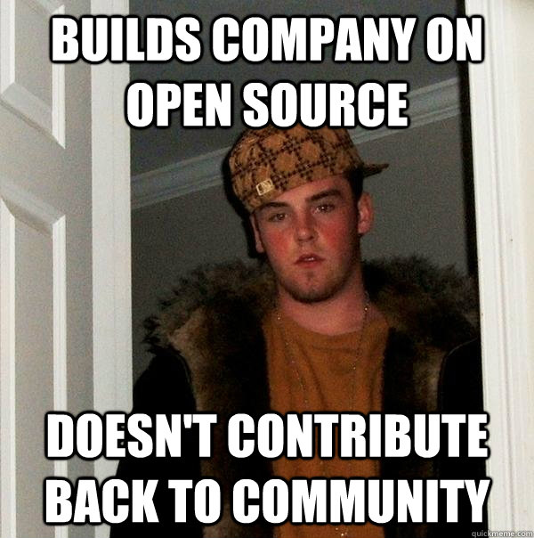
Reciprocity
Square would not exist without open source.
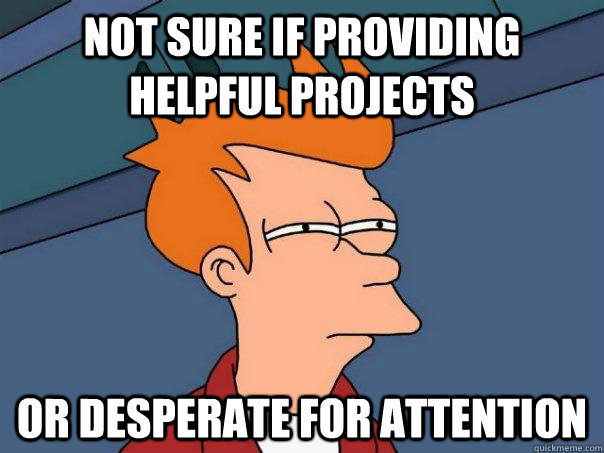
Recruiting
Being a contributor is potentially a great pathway to becoming an employee.
Having quality open source projects shows potential future employees that we care about more than just ourselves.
A better world
By open sourcing our useful projects we can enable others to write better software that we will eventually use.
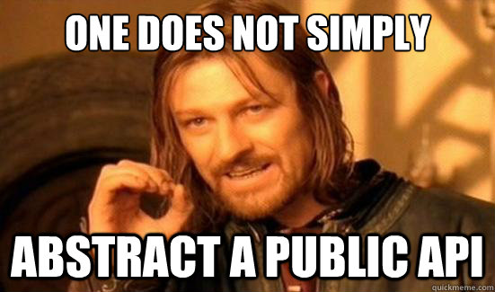
Determine a useful grouping of code that has applications beyond its current implementation.
The code should be focused and perform one task perfectly. The best libraries are the ones that are small, modular, reusable, and have very small public APIs.
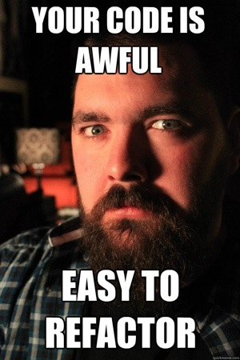
Abstract and isolate the code into a package/module/library internally and update all existing consumers to interact only with its public API.
Consider this soft-open sourcing. The project should be treated as an external third-party dependency.
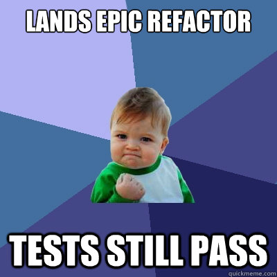
Scrutinize and peer-review all code for quality and style. Standardize all conventions and hide as much implementation detail as possible.
If possible, enforce these things at a compile time level. Java has checkstyle, Ruby has cane, JS has linters, etc.
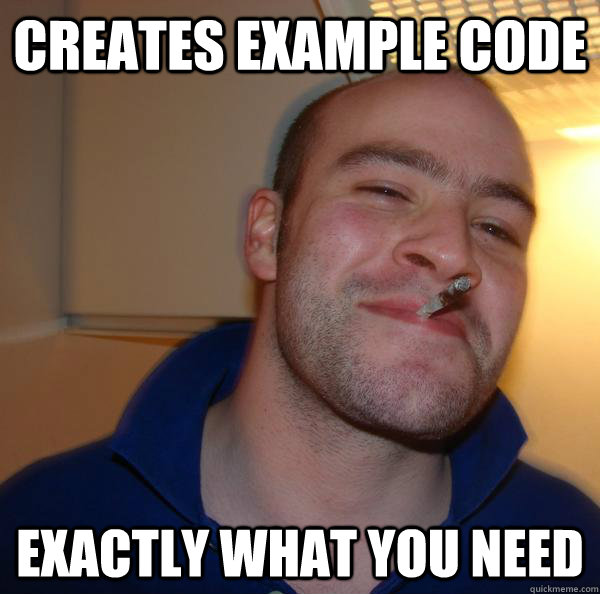
Add at least one working example. More are better. Documentation is oft ignored but example code is copy/pasted more than you would ever hope.
Examples, like the library, should be focused on demonstrating one aspect of the library in a relatively real-world situation.
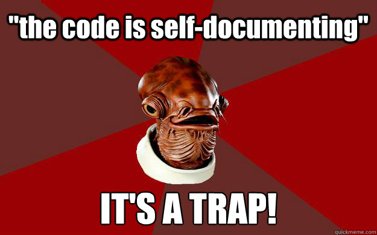
All public APIs should be meticulously documented. No exceptions.
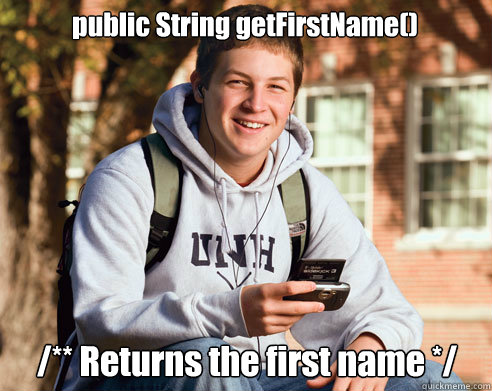
Implementation code should be documented to a degree to provide clarity for future contributors.
Omit documentation for obvious things.
Always have a README.md file which includes the project description, how to obtain the project, where documentation and examples can be found, and license information.
When visiting GitHub, this is the first thing your users see (besides your root folder structure discussed previously) is this file. Make sure you format it using GitHub-flavored Markdown.
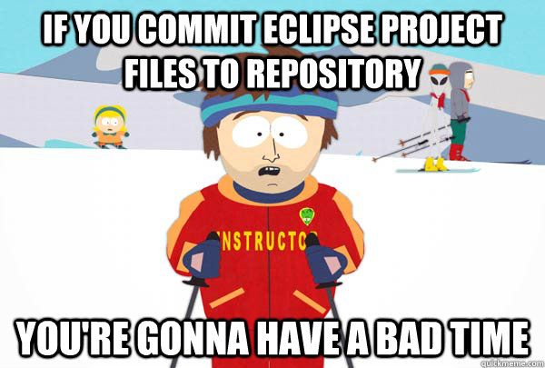
Ensure your source tree is clean, organized, and free of unnecessary files. IDE-specific configurations, generated sources, output directories, and binaries should all be omitted.
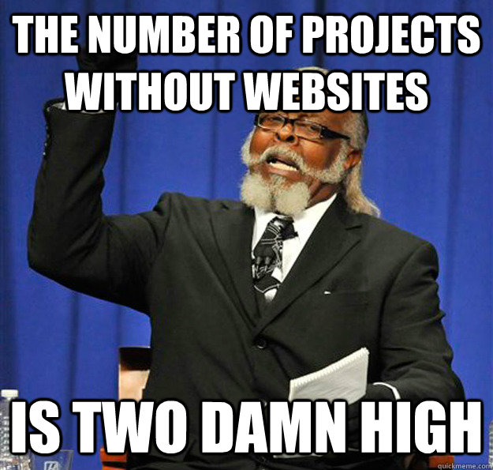
Deploy your website to the gh-pages branch of GitHub with a "Fork" ribbon linking to the code. This will provide free hosting for your site with a url like http://square.github.com/project/.
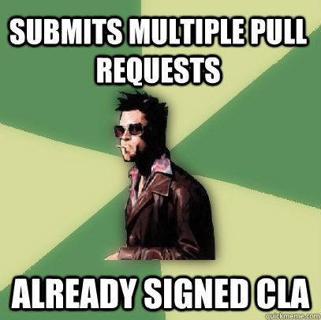
Add a CONTRIBUTING.md file which details how to properly submit code for inclusion. Square requires all contributors sign a simple licensing agreement before we will accept their code.
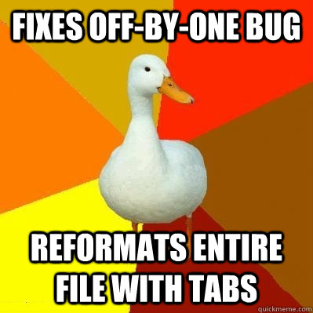
Configure Travis CI to automatically build your branches and incoming pull requests. With a CI ensuring compilation, code style, and all tests pass the code is already one step closer to being integrated.
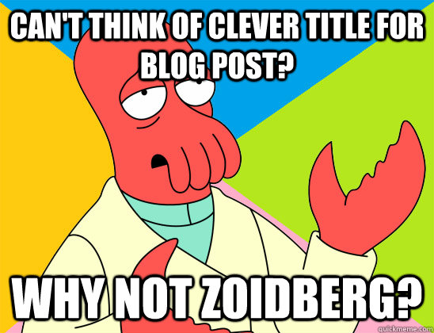
Write a blog post on the Corner announcing the project, the motivations behind it, how it solves a problem, and where to obtain examples, code, and documentation.
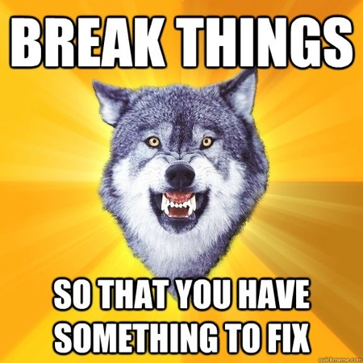
Move fast and break things—just not our things!
As more people begin contributing and using your project its scope may expand or deviate from your original vision. If the project is being used internally you must strike a balance between always staying on the latest version and ensuring that our consumers remain functional.
When in doubt, create an internal, stable fork to allow revision on the project. You should NOT stand in the way of the project's evolution.
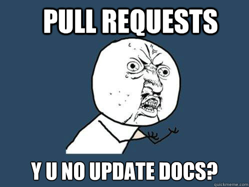
Ensure documentation, examples, and code always remain in sync.
External contributions will likely only update one or two of these, not all. New users will always be looking at all three for guidance so it is essential they remain valid.
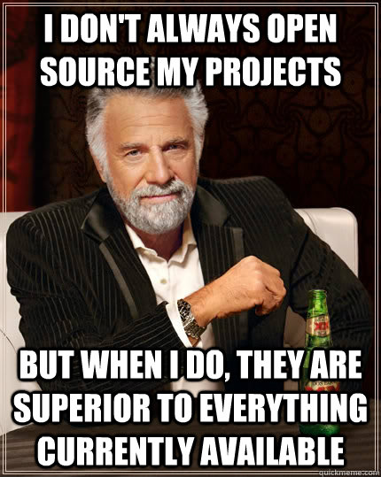
Do not be afraid to abandon a project.
We write to raise the bar and often oust existing open source projects. If someone writes a project that is measurably superior than yours you should make it known. Place deprecation notices in the readme, website, and GitHub description with links to the better implementation.
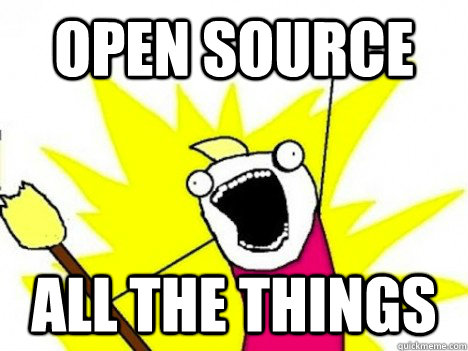